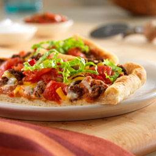

Fitness pizza

Have you ever seen pizza made from quark and oak flakes? If not, you should continue to read. :)
This pizza is loved among fitness enthusiasts. It is easy to made, healthy and yummy!
Ingredients
Dough
- 250 grams (8.8 ounces) of quark
- 100 grams (3.5 ounces) of oak flakes
- 3 tablespoons of greek yoghurt
- 1 teaspoon of olive oil
- 1/4 teaspoon of salt
Topping
- 100 grams (3.5 ounces) of tomato sauce
- 3 tablespoons of water
- 1 clove of garlic
- 1 teaspoon of basil
- 1 teaspoon of oregano
- 150 grams (5.3 ounces) of mushrooms
- 150 grams (5.3 ounces) of ham
- 40 grams (1.4 ounces) of corn
- 70 grams (2.5 ounces) of grated mozzarella
Steps
- We mix quark, oak flakes, greek yoghurt, olive oil and salt together in bowl.
- We put baking paper on a baking sheet and lay down our mixed dough. We stretch our dough to pizza shape by hands. If it's very sticky, we recommend using olive oil.
- We bake dough for 15 minutes at 190 degrees of Celsius (374 F).
- In the meantime, we mix tomato sauce, basil, oregano and clove of garlic together.
- After 15 minutes, dough is ready and we put tomato sauce on it.
- After that, we put other ingredients on pizza (ham, mushrooms, mozzarella and corn
- We bake pizza for another 15 minutes at 190 C (374 F)
- After that, we are ready to serve our pizza!
Back to Home